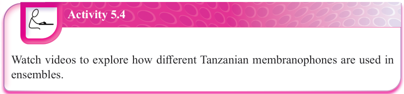
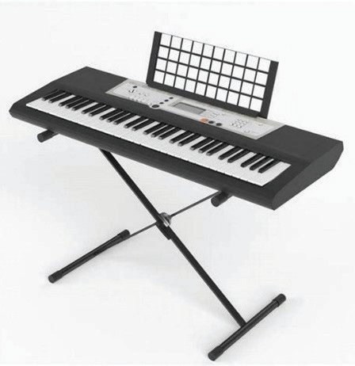
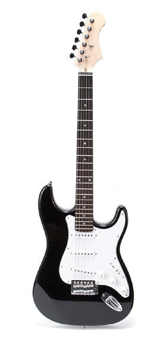
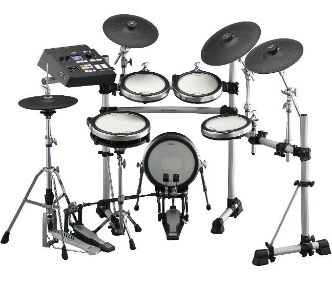
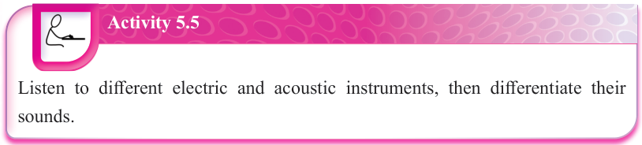

Activity 5.4
Watch videos to explore how different Tanzanian membranophones are used in ensembles.
Electrophones
These are musical instruments that produce sound electronically. For example, electric keyboards, electric guitars and electric drum kits. Electric instruments rely on electronics instead of a resonator to amplify the sound. Some of the electrophones like electric guitars can produce their original sound traditionally, and then the sound becomes electronically amplified. Figure 5.5 shows examples of electrophones.



Figure 5.5: Examples of electrophones

Activity 5.5
Listen to different electric and acoustic instruments, then differentiate their sounds.